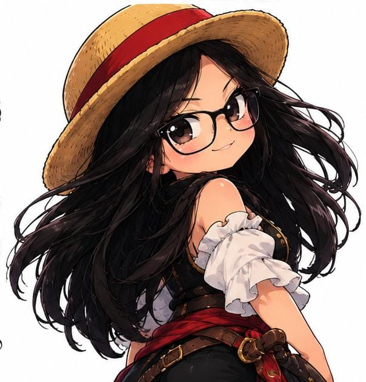

RUMBO A UNA GRAN CELEBRACIÓN
☠ISLA DEL
ESPADACHÍN
ESPADACHÍN
⚓ISLA DE LA
AVENTURA
AVENTURA
⛵
⚔
SE BUSCA: UNA TRIPULACIÓN PARA CELEBRAR
SHAKTY
21AÑOSUNA AVENTURA TE ESPERA
☠
MENSAJE DEL CAPITÁN
¡AHOY, PIRATA!
La tripulación ha sido convocada para celebrar una fecha muy especial:
Shakty cumple 21 años.Prepara tu mejor atuendo pirata, afila tu espada y únete a esta aventura. El tesoro no está en el mapa... ¡está en la fiesta!
— La capitana Shakty ⚓✦
ESPÍRITU AVENTURERO
Un toque tierno, divertido y aventurero inspirado en la energía de Chopper.
⚔
ALMA DE ESPADACHÍN
Determinación, honor y espíritu de guerrero con una vibra inspirada en Zoro.
EL RELOJ YA ESTÁ CORRIENDO
CUENTA REGRESIVA
00DÍAS
00HORAS
00MIN
00SEG
DATOS DE LA MISIÓN
EL DÍA DE LA AVENTURA
☠FECHA17 DE OCTUBRE
2026
2026
⚓HORA5:00 PM
🗺UBICACIÓNEL PUERTO
DE LA AVENTURA
DE LA AVENTURA
🏴☠️ CÓDIGO DE VESTIMENTA
¡TODOS A BORDO!
VEN CARACTERIZADO DE PIRATA
⚔️ ¡Mientras más pirata, mejor! ⚔️Sombreros, pañuelos, chalecos, botas, espadas, parches y accesorios. ¡Todo lo necesario para formar parte de la tripulación!
RECUERDOS DE LA TRIPULACIÓN
ANTES DE ZARPAR...



LISTA DE LA TRIPULACIÓN
¿TE UNES A LA AVENTURA?
Confirma tu asistencia para que la capitana sepa con cuántos piratas cuenta.
⚓ CONFIRMAR POR WHATSAPP